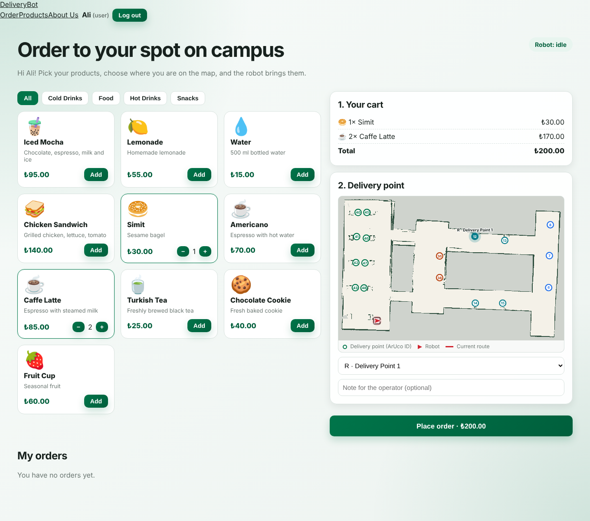
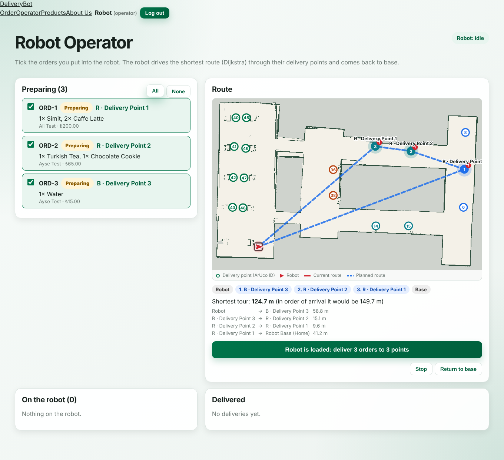
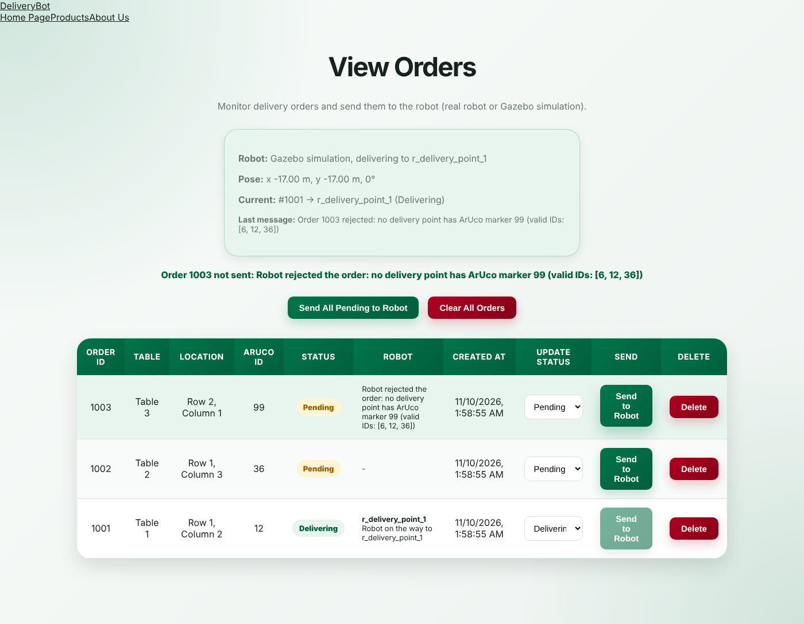
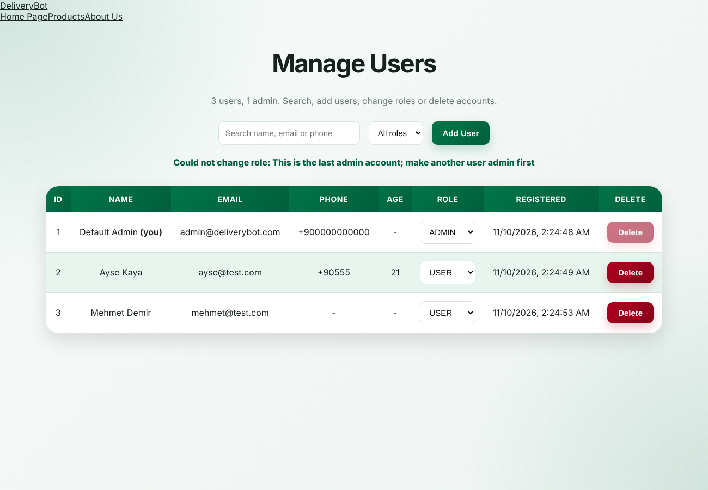
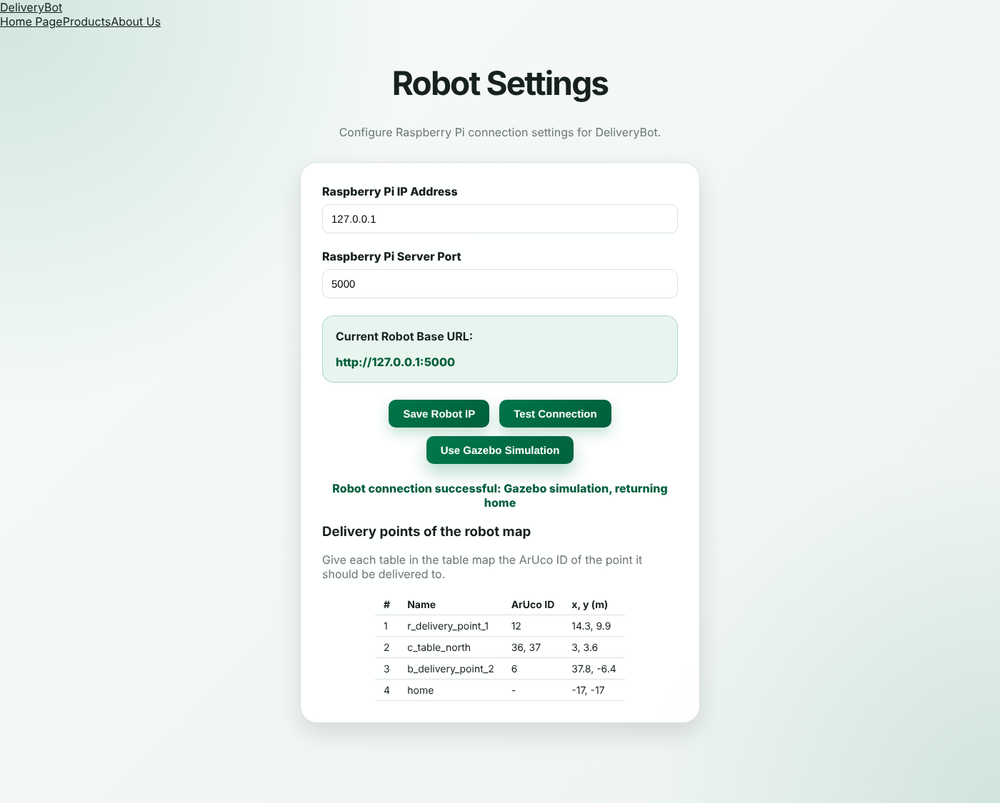
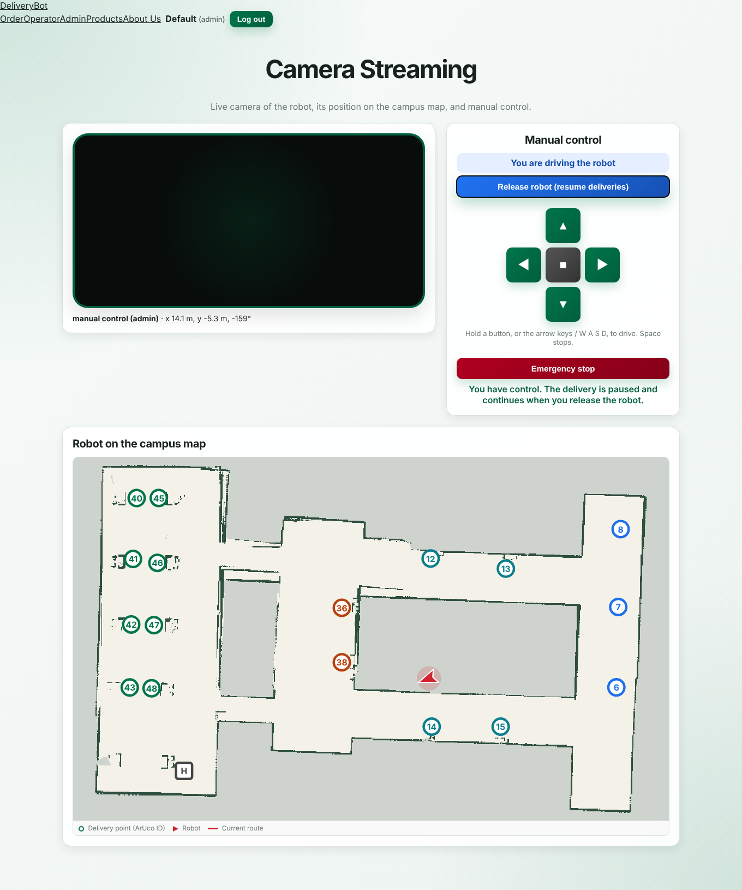
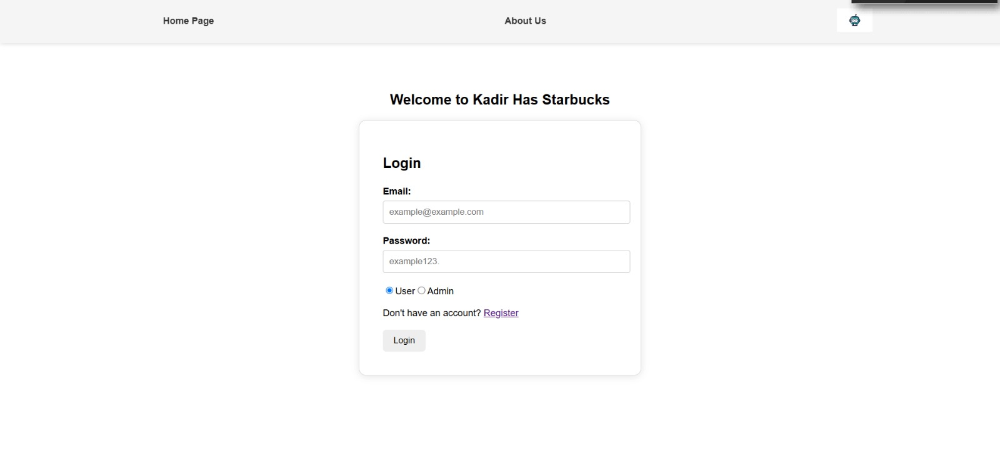
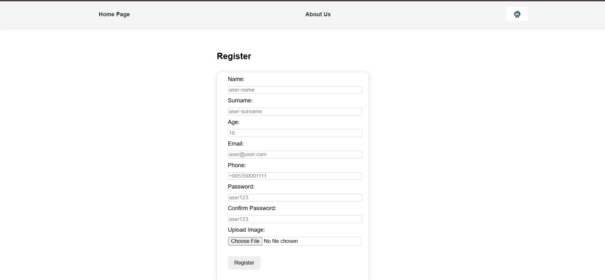
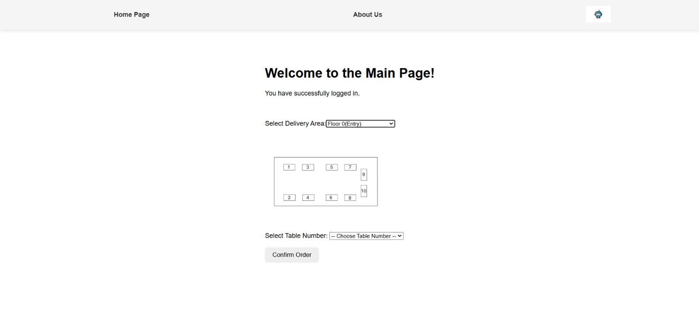

The DeliveryBot web application is the customer- and staff-facing part of the indoor delivery robot. Customers order food and drinks from a shop page and pick the delivery point on a campus map; an operator loads the orders into the robot and starts a delivery tour; an administrator manages users, orders and robot settings and can watch the robot's camera and drive it by hand. The same application drives either the robot in the Gazebo simulation or the physical robot (Raspberry Pi 4), because both expose the same REST API on port 5000.
This report describes the architecture, data model, roles and pages, the REST API and the order life cycle, and records
how the application grew from the first login/table prototype to the shop/operator version that is connected to the
simulation. Sources: web_app/ in the GitHub-ready repository (indoor-delivery-robot) and the
original project in ~/Downloads/WebApplication/Back-Front.
| Layer | Technology | Notes |
|---|---|---|
| Frontend | React 19, React Router 7, Vite 6 | 24 page components in frontend/src; no UI framework, plain CSS |
| Backend | Spring Boot 3.5.15, Java 17, Maven wrapper | spring-boot-starter-web, data-jpa, validation; Lombok |
| Security | spring-security-crypto (BCrypt) | Passwords stored as BCrypt hashes; role decides the landing page |
| Database | MySQL 8 (deliverybot_db) | Schema created by Hibernate (ddl-auto=update); seed SQL for test users |
| Robot link | RestTemplate → HTTP :5000 | Base URL from Admin → Robot Settings or ROBOT_BASE_URL |
The browser never talks to the robot directly. Every robot call goes through the backend
(RobotApiController → RaspberryPiService), which reads the robot's base URL from the
RobotConfig table. This keeps one place for timeouts (2 s connect, 5 s read), turns an unreachable robot into
an offline status instead of an error page, and lets the operator switch between the Gazebo simulation
(127.0.0.1:5000) and the real robot by changing one setting. The robot side reports progress back with
POST /api/orders/robot-status, so the database always holds the latest state of every order.
| Entity / table | Key fields | Purpose |
|---|---|---|
AppUser | name, e-mail, phone, BCrypt password, UserRole (USER / OPERATOR / ADMIN), active | Accounts and roles |
Product | name, description, category, price, icon, available | Shop catalogue (10 sample products added by DataInitializer) |
OrderRecord (delivery_orders) | order code, user, customer, total, note, status, ArUco id, delivery_point, robot_message, timestamps | One delivery order |
OrderItem (order_items) | product, quantity, price | Lines of an order (one-to-many, cascade) |
RobotConfig | raspberryPiIp, raspberryPiPort, baseUrl | Where the robot API lives |
TableRecord, MapConfig | table → ArUco id / route | Legacy table-ordering map |
RobotCommand, SensorLog | command history, distance logs | Audit and monitoring |
| Role | Landing page | What the user can do |
|---|---|---|
| USER | /main Shop | Browse products by category, fill a cart, click a delivery point on the campus map, place an order, follow My orders (Preparing → Delivering → Delivered). |
| OPERATOR | /operator | See all Preparing orders grouped by delivery point, tick the ones put into the robot, preview the Dijkstra shortest tour, press Robot is loaded: deliver. |
| ADMIN | /admin | View Orders, Manage Users (roles, activate, delete), Robot Settings, Camera Streaming & Take Control, Control Robot, Distance Monitoring, Adjust Table Map; can also open the operator page. |






| Group | Endpoints (prefix /api) |
|---|---|
| Auth | POST /auth/register, POST /auth/login |
| Products | GET/POST/PUT/DELETE /products |
| Orders | GET /orders, POST /orders/place, GET /orders/user/{id}, POST /orders/dispatch-batch, POST /orders/{id}/dispatch, PUT /orders/{id}/status, POST /orders/robot-status (called by the robot) |
| Robot proxy | GET /robot/status, /robot/points, /robot/map-info, /robot/map.png, /robot/sensors/latest, /robot/camera-url; POST /robot/plan, /robot/delivery, /robot/commands, /robot/drive |
| Admin | /admin/users (CRUD, PUT /{id}/role, PUT /{id}/activate), /robot/config, /robot/command-history, /tables, /maps, /sensors/logs |
An order placed from the shop is stored as Preparing. The operator selects several orders and starts one mission;
the backend sends them in one call to the robot and marks them Delivering. The robot drives the shortest tour and
reports each stop: Delivered when it reached the point and confirmed the right ArUco marker, Failed when it
could not, and Cancelled after an emergency stop. Cancelled and failed orders go back to the operator's list
(OrderService.WAITING = Preparing, Pending, Failed, Cancelled). The legacy admin flow (View Orders → Send to
Robot) uses Pending → Dispatched → Delivering → Delivered. Shop, operator and order pages poll the backend every
2 s, so all users see the change without reloading.
Place order → Preparing → (operator loads robot) → Delivering → Delivered
→ Failed → back to the operator list
Emergency stop during a mission → Cancelled → back to the operator list
The first version (screenshots below, from ~/Downloads/WebApplication) was a login/register application with
a "Welcome to the Main Page" screen where the user picked a delivery area and a table number from a floor plan; the
admin sent the order to the Raspberry Pi at a hard-coded IP. The current version keeps those pages (the table page is
still at /table-order) and adds:
localStorage, with items, totals and robot messages;


sudo systemctl start mysql sudo mysql < web_app/database/create_database.sql cd web_app/backend && ./mvnw spring-boot:run # http://localhost:8080 cd web_app/frontend && npm install && npm run dev # http://localhost:5173 # or everything incl. Gazebo: ros2_ws/run_web_sim.sh
Test accounts (development only) come from database/seed_users.sql: one admin, one operator and one user.
Database credentials are read from DB_URL, DB_USERNAME, DB_PASSWORD.
/orders/robot-status.